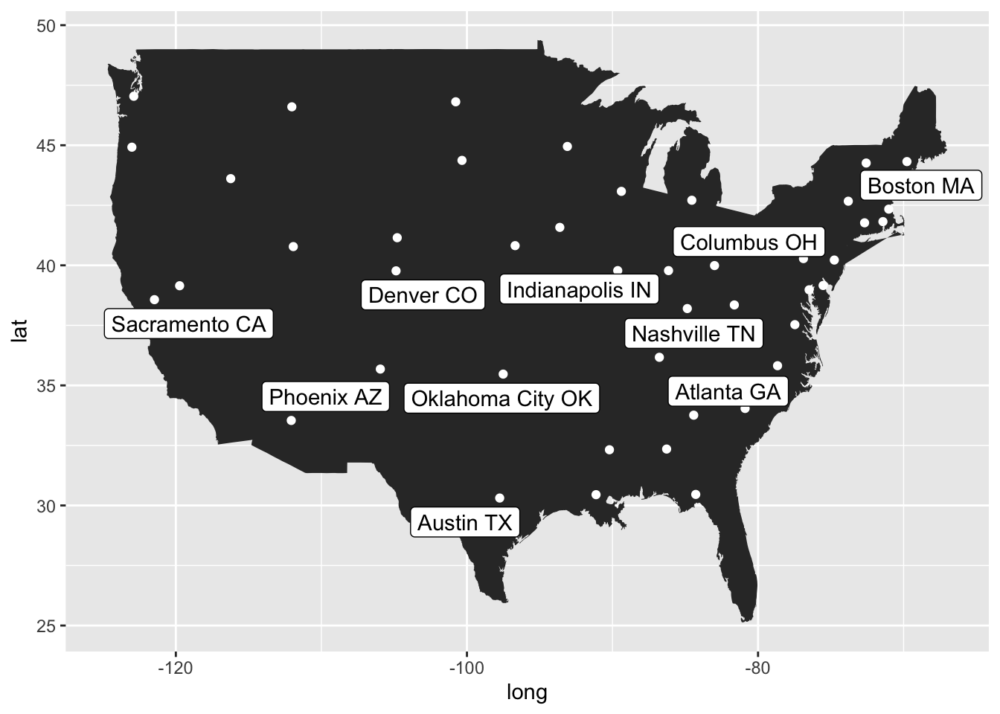

Cartography is the process of creating maps. It can be thought of as a subset of geography, with the goal of communicating geographic information effectively (and creatively!).
Early maps were often hand-drawn or painted, and they used information gathered from explorer observations and surveying techniques. These early maps often weren’t very accurate, but inventions like the compass, telescope, and ultimately satellite imagery greatly increased the accuracy of modern maps.
At their core, maps strike a balance between capturing objective geographic information and subjective creative design. This combination makes maps both powerful sources of information and potential sources of bias. A classic example of pronounced bias is in the widespread use of the Mercator projection, which maximizes the size of land closer to the north and south poles (e.g., Europe) and minimizes land closer to the equator (e.g., Africa). This projection has been criticized for its subjective representation of regions at higher latitudes as having more power and importance, where European imperial powers were concentrated during the years of early Western mapmaking.
With this in mind, there are a lot of decisions one must make as a mapmaker. In order to represent geographic information effectively and tell a data-driven story, there are certain key map elements to consider.
What is a map?
According to the International Cartographic Association, some of the important things to consider when creating a map are as follows:
1. Scale
The scale of a map reflects the ratio of map size to geographic size. This information is often presented as a guide denoting how many inches or centimeters on a map correspond to the number of feet, meters, or miles on the ground. Map scale also represents a compromise between the amount of detail and the expanse of geographic information you want to show.
2. Coordinates
In most Western maps, geographic locations will be reflected using latitude and longitude. You can think of the intersecting planes of latitude and longitude like an intersection of X and Y axes. Latitude reflects the geographic point moving east and west around the Earth, while longitude reflects the geographic point moving north and south around the Earth.
3. Projection
Because the Earth is round, and most printed maps are flat, we need to choose a suitable projection to represent the curved features of the Earth on a flat plane. As mentioned earlier, the most common is the Mercator projection, but there are a lot of options for smaller-scale maps. Some countries use specific projections and coordinate reference systems compared to others, and we can specify these reference systems and projections in digital cartography.
4. Symbols
Symbols are used in maps to describe certain elements depicted, while text is more often used to provide a detailed description of map contents. Depending on the information you’re trying to convey, certain shapes and symbols may be useful icons to reflect the location of public services, locations, or more abstract geospatial information.
5. Color and Typography
Arguably some of the most important features of maps are colors and typography. Color can be used to emphasize certain features and distinguish administrative boundaries, environmental features, and symbols. Selecting colors that are well-suited to the map content can easily turn a simple map into a powerful map (e.g., selecting a red color palette when creating a map of volcano eruptions). Moreover, text makes it easier for viewers to understand the map, and the size, typeface, and color can be manipulated to convey more information.
What is geospatial data?
How do we actually create these data-driven digital maps? We can use a type of data called geospatial data, which can be thought of location-based data containing information about objects and events that are related to physical locations on Earth’s surface. These datasets often contain locations (usually as coordinates), attributes or characteristics, and time points as they relate to a given object or event.
Geospatial data is highly informative and complex, but we can leverage specialized packages in R to neatly extract the information and create professional-looking maps all using the language of the tidyverse.
1) A Basic Map
Before we dive into specialized mapmaking packages in R, I first want to demonstrate how easy it is to make a map using data and graphing features native to ggplot2.
# packageslibrary(maps) # display of mapslibrary(ggrepel) # repel overlapping labels
── Conflicts ────────────────────────────────────────── tidyverse_conflicts() ──
✖ dplyr::filter() masks stats::filter()
✖ dplyr::lag() masks stats::lag()
✖ purrr::map() masks maps::map()
ℹ Use the conflicted package (<http://conflicted.r-lib.org/>) to force all conflicts to become errors
Let’s try making our first map!
We’ll use ggplot() to make this and all subsequent maps. To the ggplot() layer, we can add a geom_polygon() and set our coordinates using coord_cartesian(). The Cartesian coordinate system is a common type of coordinate system that reflects locations of points on a plane. You may be familiar with Cartesian coordinates from geometry and other types of graphs that use an X and Y axis to display two-dimensional data points.
Importantly, for this basic map, we are not using any special mapping packages. These are maps you can make exclusively using the tidyverse.
We first can get USA map data from the ggplot2 package and save this as a data frame.
# get USA map datausa_map <- ggplot2::map_data(map ="usa")# previewnrow(usa_map)
[1] 7243
head(usa_map)
long lat group order region subregion
1 -101.4078 29.74224 1 1 main <NA>
2 -101.3906 29.74224 1 2 main <NA>
3 -101.3620 29.65056 1 3 main <NA>
4 -101.3505 29.63911 1 4 main <NA>
5 -101.3219 29.63338 1 5 main <NA>
6 -101.3047 29.64484 1 6 main <NA>
We have 7243 individual data points. The long variable reflects the longitude of each data point (i.e., if you think about a 2D map on an intersecting X/Y plan, the x-axis) and the lat variable reflects the latitude of each data point (i.e., the y-axis). We can use these variables within a geom_polygon() to plot the shape of the United States.
# basic (no special map packages needed!)ggplot() +geom_polygon(data = usa_map, aes(x = long, y = lat)) +coord_cartesian()
Woohoo, we made our first map in R! That was pretty easy!
But if we think back to principles of cartography, what is a shape of the United States really telling us? We can think about it as a good base to add other data to. For example, we can add data reflecting the location of capital cities, one per state. Since we only have the contiguous United States right now, we’ll exclude Alaska and Hawaii’s capitals, Juneau and Honolulu, respectively.
We’ll now use our first specialized mapmaking package called maps to get a dataset called us.cities.
# get data on US cities from maps packagehead(maps::us.cities)
name country.etc pop lat long capital
1 Abilene TX TX 113888 32.45 -99.74 0
2 Akron OH OH 206634 41.08 -81.52 0
3 Alameda CA CA 70069 37.77 -122.26 0
4 Albany GA GA 75510 31.58 -84.18 0
5 Albany NY NY 93576 42.67 -73.80 2
6 Albany OR OR 45535 44.62 -123.09 0
We can see that this dataset includes the same latitude and longitude variables that our map uses, which makes our lives easier. As you’ll see if you start making more maps, this isn’t always the case!
This dataset also contains the name of each city, the state, the population size, and a binary tag noting if the city is the state capital (2) or not (0). Let’s start by only including capital cities and excluding Honolulu and Juneau.
# select only capitals (exclude alaska & hawaii)capitals <-subset(maps::us.cities, capital ==2& country.etc !="HI"& country.etc !="AK")head(capitals)
name country.etc pop lat long capital
5 Albany NY NY 93576 42.67 -73.80 2
26 Annapolis MD MD 36300 38.98 -76.49 2
41 Atlanta GA GA 424096 33.76 -84.42 2
46 Augusta ME ME 18626 44.32 -69.77 2
50 Austin TX TX 683404 30.31 -97.75 2
58 Baton Rouge LA LA 222217 30.45 -91.13 2
Great! We now have 48 state capital data points that we can overlay onto our U.S. map shape. I’m going to highlight these points in white to contrast them against the default polygon background color.
# show capitals on our basic mapggplot() +geom_polygon(data = usa_map, aes(x = long, y = lat)) +geom_point(data = capitals, aes(x = long, y = lat), color ="white") +coord_cartesian()
Now we can see a point for each of the 48 capital cities! We’re getting closer to having an informative map, but unless you’re an expert in state capital geography, it’s pretty difficult to tell which cities these points reflect. We can improve this map by adding some labels, and I’ll choose to do this for the top 10 capital cities by population.
# add labels for our top 10 capitals by populationpop <- capitals |>slice_max(n =10, order_by = pop)# showpop
name country.etc pop lat long capital
1 Phoenix AZ AZ 1450884 33.54 -112.07 2
2 Indianapolis IN IN 771725 39.78 -86.15 2
3 Columbus OH OH 741677 39.99 -82.99 2
4 Austin TX TX 683404 30.31 -97.75 2
5 Boston MA MA 567759 42.34 -71.02 2
6 Denver CO CO 556575 39.77 -104.87 2
7 Oklahoma City OK OK 538141 35.47 -97.51 2
8 Nashville TN TN 523547 36.17 -86.78 2
9 Sacramento CA CA 480392 38.57 -121.47 2
10 Atlanta GA GA 424096 33.76 -84.42 2
Now we have a new dataset containing the top 10 most populuous U.S. capitals. We can use the name variable in this dataset to create a label on our map. One of my favorite geoms to use to add labels is geom_label_repel(), which will draw a rectangle underneath the text and make it easier to read. The labels also get repelled from the data points and from each other!
# add labels on our mapggplot() +geom_polygon(data = usa_map, aes(x = long, y = lat)) +geom_point(data = capitals, aes(x = long, y = lat), color ="white") +geom_label_repel(data = pop, aes(x = long, y = lat, label = name)) +coord_cartesian()

Awesome! We can improve this map further by leveraging color to make it clear which data points reflect our most populous capital cities. We can do this by noting which capital cities are in our top 10 within the capitals dataset.
# note our top 10 in the capitals data frametop10 <- pop$namecapitals$top10 <-"0"# not in top 10 = 0capitals$top10[capitals$name %in% top10] <-"1"# in top 10 = 1# previewhead(capitals)
name country.etc pop lat long capital top10
5 Albany NY NY 93576 42.67 -73.80 2 0
26 Annapolis MD MD 36300 38.98 -76.49 2 0
41 Atlanta GA GA 424096 33.76 -84.42 2 1
46 Augusta ME ME 18626 44.32 -69.77 2 0
50 Austin TX TX 683404 30.31 -97.75 2 1
58 Baton Rouge LA LA 222217 30.45 -91.13 2 0
We can use the new top10 variable we created to color data points based on whether they are a top 10 most populous capital or not.
# plot with labelsggplot() +geom_polygon(data = usa_map, aes(x = long, y = lat)) +geom_point(data = capitals, aes(x = long, y = lat, color = top10)) +geom_label_repel(data = pop, aes(x = long, y = lat, label = name)) +coord_cartesian()
Finally, we can further customize this plot to bring the whole story together. We will change the size of the plotted points to show relative population sizes, customize the spacing of our city labels, include some new colors, remove the background and legend, and add a title and caption to denote what the map is showing.
# customize and final plotggplot() +geom_polygon(data = usa_map, aes(x = long, y = lat)) +geom_point(data = capitals, aes(x = long, y = lat, color = top10, size = pop*.1)) +geom_label_repel(data = pop, aes(x = long, y = lat, label = name), color ="#247B7B", direction ="y", nudge_y =c(3,-3)) +scale_color_manual(values =c("#D5573B", "#247B7B")) +coord_cartesian() +theme_void() +labs(title ="Top 10 U.S. Capitals by Population",caption ="Data Source: maps R package") +theme(legend.position ="none",plot.title =element_text(face ="bold", hjust =0.5, size =20),plot.caption =element_text(face ="italic", size =8))
Congratulations! You’ve now made your first customized map in R!
So what else can we do? Well, there are limitations to what we can make with datasets saved in R packages and with packages that aren’t specific to mapmaking. As we move forward in this tutorial, I’m going to highlight three different types of maps that you can make using a variety of specialized geospatial and cartography packages. We will use different data sources too, including 1) OpenStreetMap data, 2) open source geospatial data from governing bodies, and 3) elevation data. We’ll focus on another country for the rest of tutorial, Switzerland.
2) OpenStreetMap
OpenStreetMap (OSM) is a free, open-source geographic database that’s maintained, updated, and supported by an online community of collaborators. It uses its own system to store geographical features like roads, waterways, and buildings which can then be used in a variety of geographic information systems (GIS) platforms and file formats.
In this section of the tutorial, we will use an OSM package in R called osmdata that allows us to query OSM and map features of a few Swiss cities. We’ll also cover how to create a focus area using different geometry projections to make our city maps more professional looking.
First, let’s load some new packages that will be essential for working with OSM data. The first is osmdata, which allows us to download and use data from OSM. The second is sf, which allows us to translate geographic simple features (sf) into R objects to plot using ggplot().
# packageslibrary(osmdata) # download and use OSM data
Data (c) OpenStreetMap contributors, ODbL 1.0. https://www.openstreetmap.org/copyright
library(sf) # simple features
Linking to GEOS 3.11.0, GDAL 3.5.3, PROJ 9.1.0; sf_use_s2() is TRUE
We’ll first use opq() to query OSM and get two geographic features for Zürich, the largest city in Switzerland. These queries may take a minute or two depending on your computer and internet connection strength.
Using a tidy piped statement, we can tell the opq() function which city we want to query, the feature we want to grab, and return that query in sf format. We’ll want to save each query separately so we can layer these features into the map.
Just to note, we are using “Zurich, CH” as the string to query the city of Zürich. This is because the Latin words Confoederatio Helvetica means “Swiss Confederation”. And, fun fact, the typeface Helvetica was developed and aptly named in Switzerland in the 1950s!
# GET ROADS# tell opq to query Zurichzurich_roads <-opq("Zurich, CH") |># in Zurich, get all OSM features tagged as highwaysadd_osm_feature(key ="highway") |># return in sf formatosmdata_sf()# GET WATERzurich_water <-opq("Zurich, CH") |>add_osm_feature(key ="water") |>osmdata_sf()
Now we have two sf objects containing roads and water features in Zürich, Switzerland. We can use ggplot() and geom_sf() to plot these features. With these queries, we get multiple types of shapes, including lines and polygons. Depending on the type of feature we’re mapping, we may want to use lines sometimes and polygons other times. For example, we’ll want to use lines when mapping roads and polygons when mapping bodies of water. We must specify these features using the $ symbol when we tell geom_sf() what data to plot. In this case, we’re using a special kind of polygon called a multipolygon, which is made up of polygon elements and can be useful when plotting detailed shapes. These are especially useful for mapping geographic features!
# plot roads and water in Zurichggplot() +geom_sf(data = zurich_roads$osm_lines) +geom_sf(data = zurich_water$osm_multipolygons)
Well, this is pretty ugly BUT it shows us a lot of interesting information about how OSM gathered data for us.
First, let’s look at the roads. We can see that OSM queried all roads in a given area and pulled information in a square. This is because it uses “bounding boxes” or “bbox” to define the query area by two longitudes and two latitudes (creating a literal bounding box for the query). This is useful in theory, but I’ve found that I rarely want to define a map’s boundaries by this type of bounding box. More often, I’ll use administrative boundaries of a country or shapes I define myself.
Let’s look at the water. Because we’re plotting the multipolygons, we can see that we have water feature information that extends beyond the bbox, even though the query was limited to the same bbox as the roads.
Now that we have a better sense of what’s going on, we can do some simple steps to make this map more interpretable. To do this, we will zoom in and focus just on mapping the city center. We’ll define a circle around the center coordinates of Zürich and limit mapping our OSM features to that circle.
We first need to find the center coordinates of Zürich. Using a quick Google search, I found that the latitude is 47.3769 and the longitude is 8.5417. When you search yourself, you’ll see these values followed by “degrees N” and “degrees E” respectively. This gives a clue about how to plot latitude and longitude, if we think about latitude as degrees of east and west and longitude as degrees of north and south.
We’ll need to save these coordinates as an object called zurich_center.
# get zurich city center coordinateszurich_center <-c(lat =47.3769,long =8.5417)
Now we want to create a circle around this center coordinate. To do this, we need to define the distance of the circle’s radius and the coordinate reference system (CRS). The CRS refers to the target coordinate system that we want to use to draw the circle, and we want this to match the standard that Switzerland uses in this case. Otherwwise, the standard CRS is 4326, which is the EPSG identifier of WGS84, the standard coordinate frame for Earth that uses longitude and latitude.
What you need to take away from the CRS definition, is that we are telling R to transform the circle around the city center into longitude and latitude using a second CRS that is local to the area we’re in. For Switzerland, it’s 2056.
# reproject to make a circle around the center coordinates# define the latitude and longitude using the zurich city center coordinateszurich_circle <-tibble(lat = zurich_center["lat"],long = zurich_center["long"]) |># project these coordinates in standard CRS (4326)st_as_sf(coords =c("long", "lat"),crs =4326) |># now transform to local CRS (2056)st_transform(crs =2056) |># define our buffer distance (circle radius)st_buffer(dist =2000) |># re-transform the circle back to standard CRS (4326)st_transform(crs =4326)
Ok now we have our OSM objects (roads and water) and the defined circle for Zürich. We can use these together to get the intersection using st_intersection(). We’ll save these new objects as cropped versions of the originals. This chunk may also take a few minutes to run depending on your computer.
You may see a warning that says “attribute variables are assumed to be spatially constant throughout all geometries.” You can ignore this, since we modified the data to ensure they are spatially constant!
# get the intersection between roads/water and circle# will take a minute to executezurich_roads_cropped <-st_intersection(zurich_circle, zurich_roads$osm_lines)
Warning: attribute variables are assumed to be spatially constant throughout
all geometries
Warning: attribute variables are assumed to be spatially constant throughout
all geometries
Let’s make a new map using our cropped data To distinguish between elements, I’ve added a few colors: white for the circle, black for the roads, and blue for the water. I’m also defining a linewidth for the roads to make them easier to distinguish from each other. For this map, since we’ve now pivoted to data in sf format, we can no longer use coord_cartesian(). We must instead use coord_sf() to tell R that
# basicggplot() +geom_sf(data = zurich_circle, fill ="white") +geom_sf(data = zurich_roads_cropped, linewidth =0.05, color ="black") +geom_sf(data = zurich_water_cropped, fill ="blue") +coord_sf() +theme_void()
Much better! We can clearly see the roads in the city center and the water of Zürichsee, or Lake Zürich. We’ll further customize this map later in the tutorial.
Now, try making a similar map to the one we just made using the city of Interlaken.
Now it’s your turn!
Reveal Answer
# get roadsinterlaken_roads <-opq("Interlaken, Switzerland") |>add_osm_feature(key ="highway") |>osmdata_sf()# get waterinterlaken_water <-opq("Interlaken, Switzerland") |>add_osm_feature(key ="water") |>osmdata_sf()# define circle to cut out a view of interlaken# get interlaken city center coordinates (googled "interlaken coordinates")interlaken_center <-c(lat =46.6863,long =7.8632)# reproject to make circle around center coordinatesinterlaken_circle <-tibble(lat = interlaken_center["lat"],long = interlaken_center["long"]) |>st_as_sf(coords =c("long", "lat"),crs =4326) |>st_transform(crs =2056) |>st_buffer(dist =2000) |>st_transform(crs =4326)# get the intersection between roads/water and circle# will take a minute to executeinterlaken_roads_cropped <-st_intersection(interlaken_circle, interlaken_roads$osm_lines)interlaken_water_cropped <-st_intersection(interlaken_circle, interlaken_water$osm_multipolygons$geometry)# basicggplot() +geom_sf(data = interlaken_circle, fill ="white") +geom_sf(data = interlaken_roads_cropped, linewidth =0.05, color ="black") +geom_sf(data = interlaken_water_cropped, fill ="blue") +coord_sf() +theme_void()
3) Online Open Data
There are hundreds of online, open data resources for mapmaking. Cities, countries, and governments often have a geospatial data resource that you can find by searching “[city/country name] open data”. You can often find data in multiple file types, including .csv and .shp, and usually don’t need to create any account or pay for access.
For Switzerland, we can use EnviDat to download some publicly available environmental geospatial data. There is a lot of data here and at opendata.swiss, so I highly encourage you to try downloading more data after you finish this tutorial.
The data used in this tutorial can be found online here. A copy of the data can be found along with this tutorial.
Data Citation: WSL Institute for Snow and Avalanche Research SLF (2023). Avalanche accidents in Switzerland since 1970/71. EnviDat. doi:10.16904/envidat.411.
# get canton-level datacanton <- rgeoboundaries::geoboundaries("Switzerland", adm_lvl ="adm1")# showcanton
Simple feature collection with 26 features and 6 fields
Geometry type: MULTIPOLYGON
Dimension: XY
Bounding box: xmin: 5.955901 ymin: 45.81796 xmax: 10.49217 ymax: 47.80845
Geodetic CRS: WGS 84
First 10 features:
shapeGroup shapeType shapeName shapeISO shapeID
1 CHE ADM1 Aargau CH-AG 70761945B11338788345342
2 CHE ADM1 Appenzell Ausserrhoden CH-AR 70761945B71472094577065
3 CHE ADM1 Appenzell Innerrhoden CH-AI 70761945B73029947081098
4 CHE ADM1 Basel-Landschaft CH-BL 70761945B84766611276082
5 CHE ADM1 Basel-Stadt CH-BS 70761945B62987387977087
6 CHE ADM1 Bern CH-BE 70761945B78940680080703
7 CHE ADM1 Fribourg CH-FR 70761945B87604960987122
8 CHE ADM1 Genève CH-GE 70761945B83881285484717
9 CHE ADM1 Glarus CH-GL 70761945B11753136967749
10 CHE ADM1 Graubünden CH-GR 70761945B85432491504073
shapeCanonical geometry
1 Canton MULTIPOLYGON (((8.438234 47...
2 Canton MULTIPOLYGON (((9.502915 47...
3 Canton MULTIPOLYGON (((9.36218 47....
4 Canton MULTIPOLYGON (((7.375951 47...
5 Canton MULTIPOLYGON (((7.633964 47...
6 Canton MULTIPOLYGON (((7.134417 46...
7 Canton MULTIPOLYGON (((6.77301 46....
8 Canton MULTIPOLYGON (((6.21955 46....
9 Canton MULTIPOLYGON (((8.877053 46...
10 Canton MULTIPOLYGON (((8.877053 46...
# in order to eventually match our avalanche data with our canton data, we need to change # the canton codes in the avalanche data frame to the full names seen in the canton data frame# we'll call it shapeName to match and merge easily lateravalanche$shapeName <-NAavalanche$shapeName[avalanche$canton =="BE"] <-"Bern"avalanche$shapeName[avalanche$canton =="UR"] <-"Uri"avalanche$shapeName[avalanche$canton =="SG"] <-"St. Gallen"avalanche$shapeName[avalanche$canton =="GR"] <-"Graubünden"avalanche$shapeName[avalanche$canton =="TI"] <-"Ticino"avalanche$shapeName[avalanche$canton =="GL"] <-"Glarus"avalanche$shapeName[avalanche$canton =="NW"] <-"Nidwalden"avalanche$shapeName[avalanche$canton =="VS"] <-"Valais"avalanche$shapeName[avalanche$canton =="AI"] <-"Appenzell Innerrhoden"avalanche$shapeName[avalanche$canton =="SZ"] <-"Schwyz"avalanche$shapeName[avalanche$canton =="VD"] <-"Vaud"avalanche$shapeName[avalanche$canton =="OW"] <-"Obwalden"avalanche$shapeName[avalanche$canton =="FR"] <-"Fribourg"avalanche$shapeName[avalanche$canton =="AR"] <-"Appenzell Ausserrhoden"avalanche$shapeName[avalanche$canton =="LU"] <-"Luzern"avalanche$shapeName[avalanche$canton =="SO"] <-"Solothurn"avalanche$shapeName[avalanche$canton =="NE"] <-"Neuchâtel"# subset with only present canton namesavalanche <-subset(avalanche, !is.na(shapeName))# calculate number of avalanches per canton per yearavalanche_summary_years <- avalanche |>group_by(hydrological.year, shapeName) |>summarize(avalanche_count =length(avalanche.id))
`summarise()` has grouped output by 'hydrological.year'. You can override using
the `.groups` argument.
# merge canton data with avalanche severity dataavalanche_summary <-merge(avalanche_summary_total, canton, by ="shapeName")
# plotggplot() +geom_sf(data = canton, fill ="white", color ="#08171e") +geom_sf(data = avalanche_summary$geometry, aes(fill = avalanche_summary$canton_prop)) +scale_fill_gradient(low ="#D3D0CB", high ="#D5573B") +coord_sf() +theme_void()
Now it’s your turn!
Try using the avalanche coordinates to plot the exact locations for the 2022/23 hydrological year. Use the canton map we already created and geom_sf() to plot the avalanche locations. If you want a bonus challenge, you can color the points by the number of people who died in the avalanches.
HINT: You’ll need the following code to transform the latitude and longitude variables in the avalanche dataset to sf geometry.
# subset avalanche dataset to just the 2022/23 hydrological yearavalanche_22_23 <-subset(avalanche, hydrological.year =="2022/23")# select only variables of interest (just keeps the data cleaner)avalanche_22_23 <- avalanche_22_23 |>select(start.zone.coordinates.latitude, start.zone.coordinates.longitude, number.dead, shapeName, avalanche.id)# rename variables for easenames(avalanche_22_23) <-c("lat", "long", "num_dead", "shapeName", "ID")# convert to sf objectavalanche_sf <- sf::st_as_sf(avalanche_22_23,coords =c(2:1),crs =4326)# plotggplot() +geom_sf(data = canton, fill ="#08171e", color ="white") +geom_sf(data = avalanche_sf, aes(color = num_dead), size =2) +coord_sf() +theme_void() +scale_color_gradient(low ="#D3D0CB", high ="#D5573B", name =NULL) +theme(legend.position ="right",legend.key.width =unit(0.25, "cm"),legend.key.height =unit(1, "cm"),plot.background =element_rect(fill ="white", color =NA),legend.text =element_text(color ="#08171e"))
4) Elevation
The final type of geospatial data that we’ll work with in this tutorial is elevation data. This reflects the geographic height of different locations, usually in reference to sea level. We will use this data to create contour lines, an old cartography technique that uses line spacing and thickness to denote elevation on a flat, 2D map.
Let’s start off by loading some R packages that are useful when working with elevation data.
# packageslibrary(rgeoboundaries) # country administrative boundarieslibrary(showtext) # use google fonts
Loading required package: sysfonts
Loading required package: showtextdb
library(elevatr) # elevation data
elevatr v0.99.0 NOTE: Version 0.99.0 of 'elevatr' uses 'sf' and 'terra'. Use
of the 'sp', 'raster', and underlying 'rgdal' packages by 'elevatr' is being
deprecated; however, get_elev_raster continues to return a RasterLayer. This
will be dropped in future versions, so please plan accordingly.
In this section, we will use the administrative boundaries for Switzerland to define where we want to pull elevation data from. We can get the administrative boundaries of any country using the rgeoboundaries package.
# get country-level dataswiss <- rgeoboundaries::geoboundaries("Switzerland")# showswiss
Simple feature collection with 1 feature and 6 fields
Geometry type: MULTIPOLYGON
Dimension: XY
Bounding box: xmin: 5.955901 ymin: 45.81796 xmax: 10.49217 ymax: 47.80845
Geodetic CRS: WGS 84
shapeGroup shapeType shapeName shapeISO shapeID
1 CHE ADM0 The Swiss Confederation CHE 87024499B82891532811338
shapeCanonical geometry
1 The Swiss Confederation MULTIPOLYGON (((8.568881 47...
If we examine the administrative boundary data, we see an important variable called geometry. This contains the multipolygon defining the geographic boundaries of Switzerland. We can use this in combination with the elevatr package and get elevation information ONLY within these defined boundaries. In this case, that means getting elevation data for all of Switzerland and no surrounding countries.
Since Switzerland is famous for its Alps, I’m going to save my elevation data into an object called alps. We’ll use a function called get_elev_raster() from the elevatr package to pull elevation data. We need to define five arguments for this function to get us the data we want.
First, we need to define the locations, which is the swiss administrative boundary object we just created. Then, we need to define the zoom level, which ranges from 1 to 14. You can play around with the zoom to your liking, but I’ll use 6. We also need to define the clip, which is what allows us to use the multipolygon to clip the returned elevation data. We will set neg_to_na to TRUE to change any negative values to NA. Finally, we need to define the projection and ensure our data is using WGS84 latitude and longitude coordinates.
Our elevation will be saved in meters by default.
# get elevationalps <- elevatr::get_elev_raster(locations = swiss, z =6, clip ="locations",neg_to_na =TRUE,prj ="+proj=longlat +ellps=WGS84 +datum=WGS84")
Mosaicing & Projecting
Clipping DEM to locations
Note: Elevation units are in meters.
You might notice this saves the data as a “large RasterLayer”. We want to convert this to a dataframe and remove any missing elevation values. We can convert it using the terra package.
Awesome, we now have a dataset of latitude and longitude coordinates and a corresponding elevation for each point. We can use this data in combination with a new geom called geom_contour() and create a contour-line map.
To use geom_contour(), we need to define the vertical height (z) using our elevation variable. We can also color the elevation depending on the height using after_stat(level) in the color argument.
We’ll also first plot our swiss polygon using geom_sf() to show the administrative boundaries of Switzerland in addition to our contour lines. And again, since we’re using data in sf format, we need to define our coordinates using coord_sf().
# plotggplot() +geom_sf(data = swiss) +geom_contour(data = alps, aes(x = lat, y = long, z = elevation, color =after_stat(level))) +coord_sf()
Cool! We now have a basic contour elevation map. As elevation increases, the contour line shifts from a dark to light blue.
Customize
OpenStreetMap
# zurichplot <-ggplot() +geom_sf(data = zurich_circle, fill ="#08171e") +geom_sf(data = zurich_roads_cropped, linewidth =0.05, color ="#D3D0CB") +geom_sf(data = zurich_water_cropped, fill ="#247B7B", color ="#247B7B") +coord_sf() +theme_void()ggsave(plot,filename ="./output/zurich.png",width =5,height =3,units ="in",dpi =600,device ="png")
# interlakenplot <-ggplot() +geom_sf(data = interlaken_circle, fill ="#D3D0CB") +geom_sf(data = interlaken_roads_cropped, linewidth =0.05, color ="#08171e") +geom_sf(data = interlaken_water_cropped, fill ="#247B7B", color ="#247B7B") +coord_sf() +theme_void() ggsave(plot,filename ="./output/interlaken.png",width =5,height =3,units ="in",dpi =600,device ="png")
Online Open Data
# avalanchesplot <-ggplot() +geom_sf(data = canton, fill ="white", color ="#08171e") +geom_sf(data = avalanche_summary$geometry, aes(fill = avalanche_summary$canton_prop)) +scale_fill_gradient(low ="#D3D0CB", high ="#D5573B", name =NULL, labels = scales::label_percent()) +coord_sf() +theme_void() +theme(legend.position ="right",legend.key.width =unit(0.25, "cm"),legend.key.height =unit(1, "cm"),plot.background =element_rect(fill ="#08171e", color =NA),legend.text =element_text(color ="white"))# saveggsave(plot,filename ="./output/avalanche.png",width =5,height =3,units ="in",dpi =600,device ="png")
Elevation
# get fontshowtext_auto()font_add_google(name ="Sacramento", family ="sacramento")# elevationplot <-ggplot() +geom_sf(data = swiss, fill ="#08171e", color ="#08171e") +geom_contour(data = alps, aes(x = lat, y = long, z = elevation, color =after_stat(level)), linewidth =0.3) +scale_color_gradientn(colors =c("#042b44","#a1ccdc"), breaks =c(0,500,4000)) +annotate(geom ="text",label ="Switzerland",x =-Inf, y =-Inf, hjust =-0.05, vjust =-9.3,size =60, family ="sacramento", color ="#042b44") +theme_void() +coord_sf() +theme(legend.position ="none",plot.background =element_rect(fill ="#a1ccdc", color =NA))# saveggsave(plot,filename ="./output/swiss-elevation.png",width =5,height =3,units ="in",dpi =600,device ="png")
Next Steps
Congratulations, you are now a cartographer! What’s next for your new mapmaking skills?
Below you will find some additional resources for using spatial data and making maps in R. I’ve also included a few websites where you can find a lot of open geospatial data.
I also want to encourage all of you to take part in this year’s #30DayMapChallenge, a month-long mapmaking challenge in November 2024. I’ve participated in two of these challenges so far, and they were BY FAR the best way for me to practice and learn more about making maps. There’s a fabulous online community of digital mapmakers that take part in the challenge every year, and I find everyone’s creativity and programming skill to be really inspiring. This community also loves to share code and resources for anyone else to follow.
I’ve included a collection of the maps I’ve made while participating below, and you can find all my code on GitHub (2022, 2023).
![]()